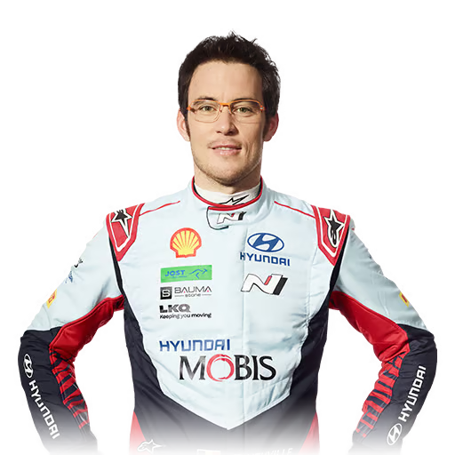
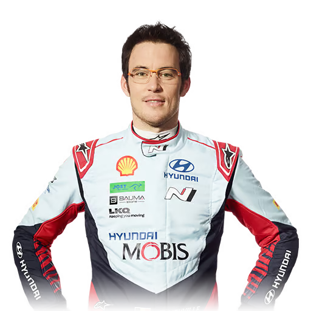
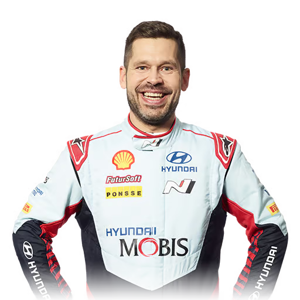

Motor Sports
Unleash the Drive
Make every moment behind the wheel extraordinary with Hyundai N.
Nürburgring 24 Hours
Conquering “The Green Hell”
The Nürburgring 24 Hours is one of the most demanding circuits in the world — a true proving ground where cars are pushed to their absolute limits on a 25 km track with 154 corners. Hyundai N has demonstrated its outstanding engineering prowess by finishing this notorious race for 10 consecutive years.
Hyundai N at the Nürburgring 24 Hours


Legendary Track, Legendary Race
The bond between the N brand and the Nürburgring is rooted in a deep history and passion. The “N” in Hyundai N originates from the Nürburgring — where Hyundai’s European Technical Center is located — and from the Namyang R&D Center in Korea.
Known as “The Green Hell,” the Nürburgring is the ultimate proving ground where every N vehicle pushes its limits.
World Rally Championships
Love the Rally, Go Crazy
This year marks the 10th anniversary of Hyundai N’s participation in the WRC. We have never accepted defeat in any race and have always aimed for victory. That goal remains unchanged in 2024 — we will continue to lead throughout the season and race relentlessly toward the championship title.
2024 Driver Lineup
-
TEAM 1
-

THIERRY
NEUVILLE -
MARTIJN
WYDAEGHE
-

-
TEAM 2
-
OTT
TANAK -
MARTIN
JARVEOJA
-
-
TEAM 3
-
DANI
SORDO -
CANDIDO
CARRERA
-
-
TEAM 4
-
ESAPEKKA
LAPPI -

JANNE
FERM
-
Touring Car Racing
N Inspired by Motorsport

In motorsport, securing fundamental technical data from mass-production vehicles is crucial for advancing racing car technology. To address this core challenge, the Namyang R&D Center and the European Technical Center work closely together, continuously pushing the boundaries of innovation. Regular technology-sharing forums with Namyang further maximize the efficiency of advanced technology development. Thanks to this collaboration, mass-production vehicles are now developed more effectively, based on the same innovative technology platform as racing cars.
Victory in the 2024 TCR World Tour

WINNER
Norbert Michelisz
-
2018
WINNERGabriele Tarquini
-
2019
WINNERNorbert Michelisz
-
2022
WINNERMikel Azcona
-
2023
WINNERNorbert Michelisz